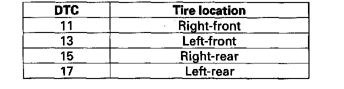

Tire Pressure Monitoring System
DTC 11, 13, 15, 17: Low Tire PressureNOTE: If low tire pressure is detected, the control unit will set one or more of these DTCs, and turn on the low pressure indicator and the appropriate tire indicator(s). If the low pressure and tire indicators come on due to true low tire pressure, and the customer corrects it before bringing the vehicle in, the DTCs will have been stored, but all the indicators will be off.
1. Turn the ignition switch ON (II).
2. Check which tire indicator is on.
NOTE: If no tire indicators are on, retrieve the DTCs with the HDS.

3. Turn the ignition switch OFF.
4. Check the pressure of the indicated tire.
Is there 175 kPa (1.8 kgf/cm2, 25 psi) or less?
YES - Go to step 5.
NO - Go to step 7.
5. Check for and repair the cause of air loss, and then inflate the tire.
6. Turn the ignition switch ON (II).
Do the tire indicators go off within one minute?
YES - The system is OK at this time. Clear the DTC with the HDS.
NO - Go to step 7.
7. Check the tire pressure of the appropriate tire with the HDS.
NOTE: If the HDS screen shows not defined for sensor status, turn the ignition switch OFF, rotate the tire 1/4 turn, then turn the ignition switch ON (II) and try again. If not defined is still shown, repeat the procedure in the previous sentence until NORMAL is shown.
Is the indicated tire pressure on the HDS within 40 kPa (0.4 kgf/cm2, 6 psi) of the actual tire pressure?
YES - Check for loose terminals and poor connections at the TPMS control unit. If necessary, substitute a known-good TPMS control unit and recheck.
NO - Check that the tire-pressure sensor is properly mounted. Replace the appropriate tire pressure sensor.